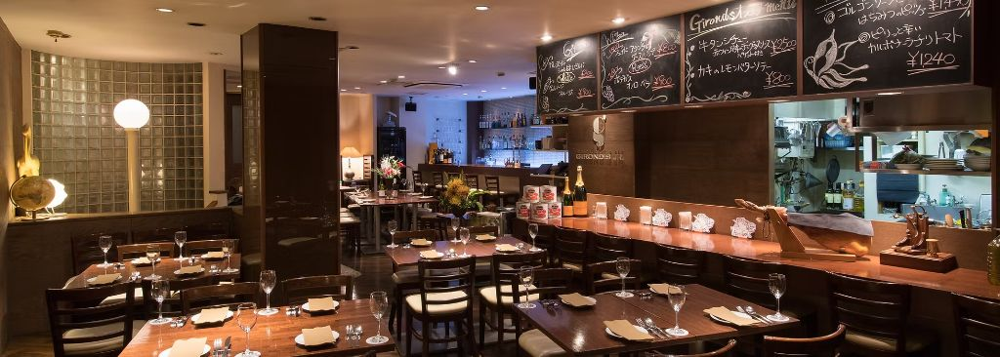

それが、ジローズ・ジュニアという場所だ。」
― FOOTBALL CONNECTION 編集部コメント
大阪・北新地のジロービル3Fに構えるRestrant&Bar。 関西のアメフト界では、もはや説明不要の存在。 現役・OB・コーチ・審判——立場を問わず、アメフトに関わる人間なら誰もが知る、業界屈指の名店だ。
シーズンの打ち上げ、引退後の再会、関学戦の翌夜—— アメフト界の節目には必ずこの店があった。 長年にわたり関西アメフトコミュニティの「集いの場」として愛され続けてきた一軒。
月〜金は25:30まで、土曜も24:30まで営業。 北新地という立地ならではの、夜が長い大人のレストランバー。
中学生のとき、チェスナットリーグのベンガルズでアメリカンフットボールと出会った。 関西学院高等部、そして関西学院大学FIGHTERSへ—— 現役時代を終えても、グラウンドへの思いは消えなかった。 卒業後も約5年間、母校でDBコーチとしてフィールドに立ち続けた。
アメフトで学んだことは、この店にそのまま生きている。 誠実であること、チームで動くこと、最後まで諦めないこと。 だからこそ、関西アメフト界の誰もがここを知っている。 長年にわたり業界の仲間たちが集い、語り、笑った場所—— それがジローズ・ジュニアだ。
「ジローズ・ジュニア、知ってる？」——関西のアメフト関係者にこう聞けば、 知らない人はまずいない。それほどこの店は、長年にわたって業界に根付いてきた。
シーズンの打ち上げ、引退後の再会、全国大会の前夜—— アメフト界の節目にはいつもこの店があった。 初めて来る人も「あ、ここがあのジローズか」と感じるはず。 関西アメフト界が誇る、本物の聖地がここにある。
| 🏪 店舗名 | Restrant&Bar ジローズ・ジュニア |
| 📍 住所 | 大阪府大阪市北区曽根崎新地1-1-40 ジロービル3F |
| 📞 電話 | 06-6344-2601 |
| 🕐 営業時間 | 月〜金 18:00〜25:30 土 18:00〜24:30 |
| 📅 定休日 | 日曜・祝日 |
| 🌐 公式サイト | girondsjr.com |
| @girondsjr | |
| 👤 オーナー | 徳永真介（関西学院大学FIGHTERS OB・元DBコーチ） |